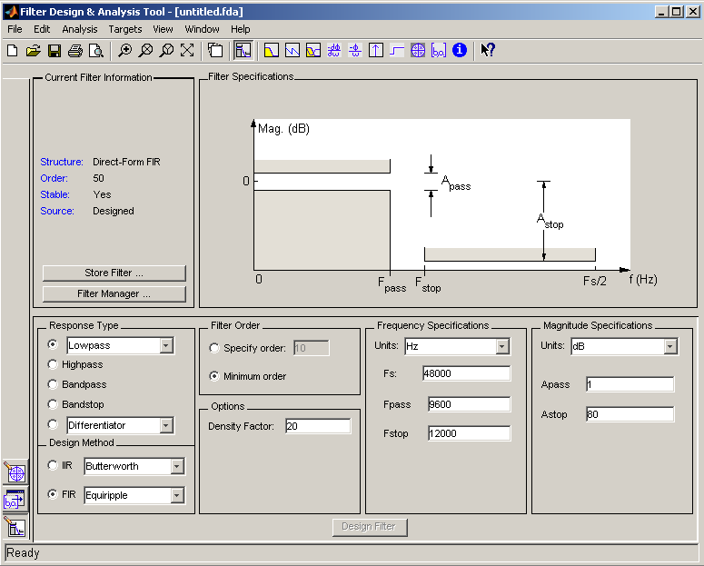
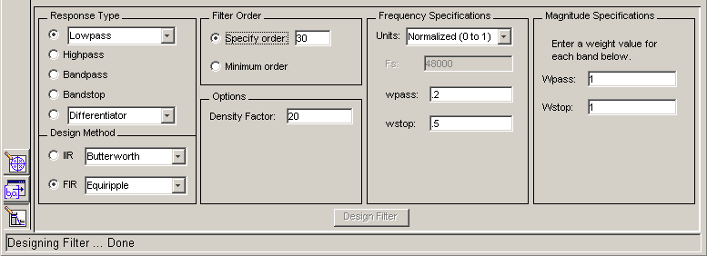
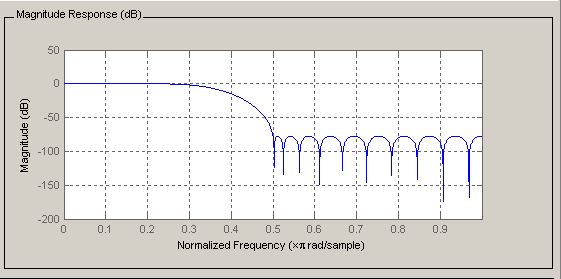
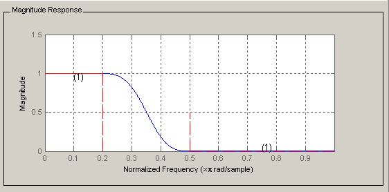
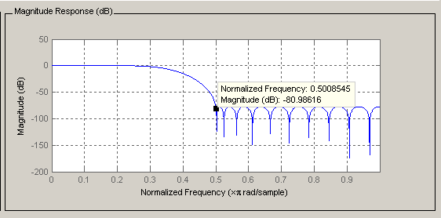
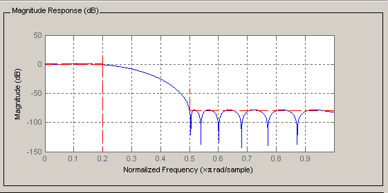
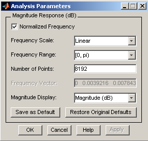
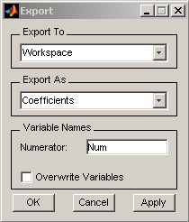
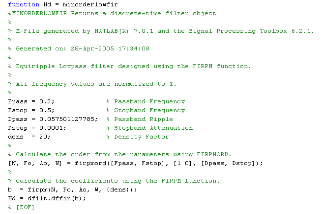
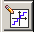

Introduction to the Filter Design and Analysis Tool (FDATool)
The Filter Design and Analysis Tool (FDATool) is a powerful graphical user interface (GUI) in the Signal Processing Toolbox™ for designing and analyzing filters.
FDATool enables you to quickly design digital FIR or IIR filters by setting filter performance specifications, by importing filters from your MATLAB® workspace or by adding, moving or deleting poles and zeros. FDATool also provides tools for analyzing filters, such as magnitude and phase response plots and pole-zero plots.
You can use FDATool as a convenient alternative to the command line filter design functions.
Contents
- Getting Started
- Designing a Filter
- Viewing other Analyses
- Comparing the Design to Filter Specifications
- Changing Axes Units
- Marking Data Points
- Optimizing the Design
- Using a Different Filter Structure
- Changing Analyses Parameters
- Exporting the Filter
- Generating a MATLAB File
- Quantizing a Filter
- Targets
- Additional Features
Getting Started
Type fdatool at the MATLAB command prompt:
>>fdatool
A Tip of the Day dialog displays with suggestions for using FDATool. Then, the GUI displays with a default filter.

The GUI has three main regions:
- The Current Filter Information region
- The Filter Display region and
- The Design panel
The upper half of the GUI displays information on filter specifications and responses for the current filter. The Current Filter Information region, in the upper left, displays filter properties, namely the filter structure, order, number of sections used and whether the filter is stable or not. It also provides access to the Filter manager for working with multiple filters.
The Filter Display region, in the upper right, displays various filter responses, such as, magnitude response, group delay and filter coefficients.
The lower half of the GUI is the interactive portion of FDATool. The Design Panel, in the lower half is where you define your filter specifications. It controls what is displayed in the other two upper regions. Other panels can be displayed in the lower half by using the sidebar buttons.
The tool includes Context-sensitive help. You can right-click or click the What's This? button to get information on the different parts of the tool.
Designing a Filter
We will design a low pass filter that passes all frequencies less than or equal to 20% of the Nyquist frequency (half the sampling frequency) and attenuates frequencies greater than or equal to 50% of the Nyquist frequency. We will use an FIR Equiripple filter with these specifications:
- Passband attenuation 1 dB
- Stopband attenuation 80 dB
- A passband frequency 0.2 [Normalized (0 to 1)]
- A stopband frequency 0.5 [Normalized (0 to 1)]
To implement this design, we will use the following specifications:

1. Select Lowpass from the dropdown menu under Response Type and Equiripple under FIR Design Method. In general, when you change the Response Type or Design Method, the filter parameters and Filter Display region update automatically.
2. Select Specify order in the Filter Order area and enter 30.
3. The FIR Equiripple filter has a Density Factor option which controls the density of the frequency grid. Increasing the value creates a filter which more closely approximates an ideal equiripple filter, but more time is required as the computation increases. Leave this value at 20.
4. Select Normalized (0 to 1) in the Units pull down menu in the Frequency Specifications area.
5. Enter 0.2 for wpass and 0.5 for wstop in the Frequency Specifications area.
6. Wpass and Wstop, in the Magnitude Specifications area are positive weights, one per band, used during optimization in the FIR Equiripple filter. Leave these values at 1.
7. After setting the design specifications, click the Design Filter button at the bottom of the GUI to design the filter.
The magnitude response of the filter is displayed in the Filter Analysis area after the coefficients are computed.

Viewing other Analyses
Once you have designed the filter, you can view the following filter analyses in the display window by clicking any of the buttons on the toolbar:
In order from left to right, the buttons are
- Magnitude response
- Phase response
- Magnitude and Phase responses
- Group delay response
- Phase delay response
- Impulse response
- Step response
- Pole-zero plot
- Filter Coefficients
- Filter Information
Comparing the Design to Filter Specifications
FDATool allows you to measure how closely your design meets the filter specifications by using Specification masks which overlay the filter specifications on the response plot. In the Display Region, when the Magnitude plot is displayed, select Specification Mask from the View menu to overlay the filter specifications on the response plot.
The magnitude response of the filter with Specification mask is shown below:

Changing Axes Units
You can change the x- or y-axis units by right-clicking the mouse on an axis label and selecting the desired units. The current units have a checkmark.

Marking Data Points
In the Display region, you can click on any point in the plot to add a data marker, which displays the values at that point. Right-clicking on the data marker displays a menu where you can move, delete or adjust the appearance of the data markers.

Optimizing the Design
To minimize the cost of implementation of the filter, we will try to reduce the number of coefficients by using Minimum Order option in the design panel.
Change the selection in Filter Order to Minimum Order in the Design Region and leave the other parameters as they are.
Click the Design Filter button to design the new filter.

As you can see in the Current Filter Information area, the filter order decreased from 30 to 16, the number of ripples decreased and the transition width became wider. The passband and the stopband specifications still meet the design criteria.
Using a Different Filter Structure
Our filter is a Direct-form FIR. Typically, the Direct-Form FIR transposed structure is implemented in hardware. You can use Convert Structure dialog from the Edit menu to change the current filter to a new structure. Filters can be converted to the following representations:
- State-Space
- Direct-Form FIR
- Direct-Form FIR Transposed
- Direct-Form Symmetric FIR
Changing Analyses Parameters
By right-clicking on the plot and selecting Analysis Parameters, you can display a dialog box for changing analysis-specific parameters. (You can also select Analysis Parameters from the Analysis menu.)

To save the displayed parameters as the default values, click Save as Default. To restore the MATLAB-defined default values, click Restore Original Defaults.
Exporting the Filter
Once you are satisfied with your design, you can export your filter to the following destinations:
- MATLAB workspace
- MAT-file
- Text-file
Select Export from the File menu.

If exporting to the MATLAB workspace, you can export as coefficients or as an object by selecting from the Export from the pulldown menu.
If you want to export as an object, the object's properties control many aspects of its apearance and behaviour. You can use GET and SET commands from the MATLAB command prompt to have access and manipulate the property values of the object.
Generating a MATLAB File
FDATool allows you to generate MATLAB code to re-create your filter. This enables you to embed your design into existing code or automate the creation of your filters in a script.
Select Generate MATLAB code from the File menu and specify the filename in the Generate MATLAB code dialog box.
The following code was generated from the minimum order filter we designed above:

Quantizing a Filter
If you have the Filter Design Toolbox™ installed, the Set quantization parameters panel is available on the sidebar:

You can use this panel to quantize and analyze double-precision filters. With the Filter Design Toolbox you can quantize from double-precision to single-precision. If you have the Fixed Point Toolbox, you can quantize filters to fixed-point precision. Note that you cannot mix floating-point and fixed-point arithmetic in your filter.
Targets
The Targets menu of the FDATool allows you to generate various types of code representing your filter. For example, you can generate C header files, XILINX coefficients(COE) files (with the Filter Design Toolbox) and VHDL, Verilog along with test benches (with Filter Design HDL Coder™).
Additional Features
FDATool also integrates additional functionality from these other MathWorks™ products:
- Embedded Target for Texas Instruments™ C6000™ DSP- Generates downloadable code for C6000 DSP target board.
- Filter Design HDL Coder- Generates synthesizable VHDL or Verilog code for fixed-point filters
- Filter Design Toolbox- Adds advanced FIR and IIR design techniques (i.e. Filter transformations, Multirate filters)
- Embedded IDE Link™ CC Development Tool- Exports code usable by Code Composer Studio™
- Signal Processing Blockset™- Generates equivalent Signal Processing Blockset block for the filter
- Simulink®- Generates filters from atomic Simulink blocks